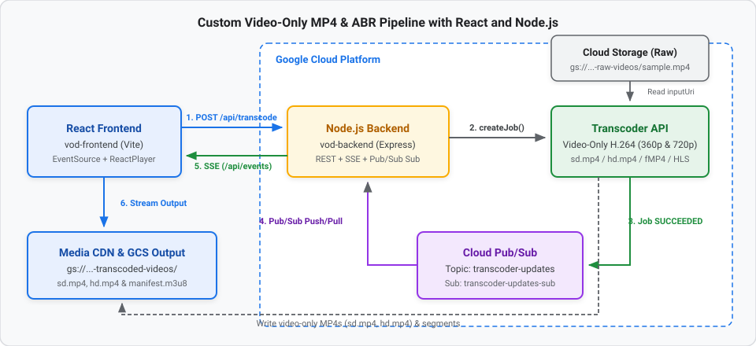

In this codelab, you will build a Custom Video-Only MP4 & Adaptive Streaming Pipeline using Google Cloud Transcoder API, Cloud Pub/Sub, Node.js (Express), and React.
By defining custom elementaryStreams that contain only H.264 video bitstreams (video-stream0 for 360p SD and video-stream1 for 720p HD) without audio elementary streams, the Transcoder API strips out any audio tracks from the source media and produces clean, silent video-only outputs:
sd.mp4 and hd.mp4).ts) streams with an HLS playlist (manifest.m3u8)video-only-sd.m4s, video-only-hd.m4s) streams with a DASH manifest (manifest.mpd)
View interactive diagram: Graphviz Architecture Diagram
vod-backend): /api/events) endpoint for real-time browser notifications./api/transcode) endpoint that defines custom video-only H.264 elementary streams (360p SD & 720p HD), packages them into MP4 (sd.mp4, hd.mp4), MPEG-TS, and fMP4 containers, and generates HLS/DASH manifests.SUCCEEDED jobs and pushes the playback URL to the frontend via SSE.vod-frontend): EventSource, and plays the resulting video stream with react-player.gcloud) installed and authenticated.Before running the backend and frontend applications, set up the required Google Cloud resources.
Open a terminal and set your Google Cloud Project ID and region:
export PROJECT_ID="your-project-id"
export LOCATION="us-central1"
gcloud config set project $PROJECT_ID
Enable the Video Transcoder, Cloud Pub/Sub, and Cloud Storage APIs:
gcloud services enable \
transcoder.googleapis.com \
pubsub.googleapis.com \
storage.googleapis.com
Create two buckets: one for raw uploaded source videos and one for the transcoded video-only MP4s and streaming segments.
# Bucket for source videos
gcloud storage buckets create gs://${PROJECT_ID}-raw-videos --location=$LOCATION
# Bucket for transcoded video-only outputs
gcloud storage buckets create gs://${PROJECT_ID}-transcoded-videos --location=$LOCATION
Upload a sample video named sample.mp4 to your raw videos bucket:
gcloud storage cp /path/to/your/sample.mp4 gs://${PROJECT_ID}-raw-videos/sample.mp4
Create the Pub/Sub topic and pull subscription used to notify the Node.js server when transcoding finishes:
# Create the topic
gcloud pubsub topics create transcoder-updates
# Create the subscription for the Node.js worker
gcloud pubsub subscriptions create transcoder-updates-sub \
--topic=transcoder-updates
Allow the Transcoder Service Agent to publish job state updates to your Pub/Sub topic:
PROJECT_NUMBER=$(gcloud projects describe $PROJECT_ID --format="value(projectNumber)")
gcloud pubsub topics add-iam-policy-binding transcoder-updates \
--member="serviceAccount:service-${PROJECT_NUMBER}@gcp-sa-transcoder.iam.gserviceaccount.com" \
--role="roles/pubsub.publisher"
Authenticate your local environment so the Node.js client libraries can access Google Cloud:
gcloud auth application-default login
Let's create the Express backend that submits custom video-only transcoding jobs, listens to Pub/Sub events, and streams updates to the React client via Server-Sent Events (SSE).
mkdir vod-backend && cd vod-backend
npm init -y
npm install express cors @google-cloud/video-transcoder @google-cloud/pubsub
Create vod-backend/server.js and add the configuration constants and /api/events SSE endpoint:
const express = require('express');
const cors = require('cors');
const { TranscoderServiceClient } = require('@google-cloud/video-transcoder').v1;
const { PubSub } = require('@google-cloud/pubsub');
const app = express();
app.use(cors());
app.use(express.json());
const PROJECT_ID = 'your-project-id'; // Replace with your GCP Project ID
const LOCATION = 'us-central1';
const TOPIC_NAME = `projects/${PROJECT_ID}/topics/transcoder-updates`;
const SUB_NAME = 'transcoder-updates-sub';
const CDN_DOMAIN = 'https://media.yourdomain.com'; // Your Media CDN host
let clients = []; // Store connected SSE clients
// --- 1. Real-time SSE Endpoint ---
app.get('/api/events', (req, res) => {
res.setHeader('Content-Type', 'text/event-stream');
res.setHeader('Cache-Control', 'no-cache');
res.setHeader('Connection', 'keep-alive');
res.flushHeaders();
clients.push(res);
req.on('close', () => {
clients = clients.filter(client => client !== res);
});
});
const sendEventToClients = (data) => {
clients.forEach(client => client.write(`data: ${JSON.stringify(data)}\n\n`));
};
Next, add the /api/transcode endpoint and the Pub/Sub subscriber to vod-backend/server.js.
POST /api/transcode)Append the /api/transcode route to vod-backend/server.js:
// --- 2. Transcoder Submit Endpoint ---
app.post('/api/transcode', async (req, res) => {
const { fileName } = req.body; // e.g., 'sample.mp4'
console.log(fileName);
const transcoderClient = new TranscoderServiceClient();
const request = {
parent: transcoderClient.locationPath(PROJECT_ID, LOCATION),
job: {
inputUri: `gs://${PROJECT_ID}-raw-videos/${fileName}`,
outputUri: `gs://${PROJECT_ID}-transcoded-videos/output-${fileName}/`,
templateId: 'preset/web-hd',
config: {
pubsubDestination: { topic: TOPIC_NAME },
elementaryStreams: [
{
key: 'video-stream0',
videoStream: {
h264: {
widthPixels: 640,
heightPixels: 360,
frameRate: 30,
bitrateBps: 550000,
pixelFormat: 'yuv420p',
rateControlMode: 'vbr',
crfLevel: 21,
gopDuration: {
seconds: 3,
nanos: 0
},
vbvSizeBits: 550000,
vbvFullnessBits: 495000,
entropyCoder: 'cabac',
bFrameCount: 3,
aqStrength: 1,
profile: 'high',
preset: 'veryfast'
}
}
},
{
key: 'video-stream1',
videoStream: {
h264: {
widthPixels: 1280,
heightPixels: 720,
frameRate: 30,
bitrateBps: 2500000,
pixelFormat: 'yuv420p',
rateControlMode: 'vbr',
crfLevel: 21,
gopDuration: {
seconds: 3,
nanos: 0
},
vbvSizeBits: 2500000,
vbvFullnessBits: 2250000,
entropyCoder: 'cabac',
bFrameCount: 3,
aqStrength: 1,
profile: 'high',
preset: 'veryfast'
}
}
}
],
// 2. Package streams into containers (muxing)
muxStreams: [
{ key: 'sd', fileName: 'sd.mp4', container: 'mp4', elementaryStreams: ['video-stream0'] },
{ key: 'hd', fileName: 'hd.mp4', container: 'mp4', elementaryStreams: ['video-stream1'] },
{ key: 'media-sd', fileName: 'media-sd.ts', container: 'ts', elementaryStreams: ['video-stream0'] },
{ key: 'media-hd', fileName: 'media-hd.ts', container: 'ts', elementaryStreams: ['video-stream1'] },
{ key: 'video-only-sd', fileName: 'video-only-sd.m4s', container: 'fmp4', elementaryStreams: ['video-stream0'] },
{ key: 'video-only-hd', fileName: 'video-only-hd.m4s', container: 'fmp4', elementaryStreams: ['video-stream1'] },
],
// 3. Generate the Manifests (HLS and DASH)
manifests: [
{ fileName: 'manifest.m3u8', type: 'HLS', muxStreams: ['media-sd', 'media-hd'] },
{ fileName: 'manifest.mpd', type: 'DASH', muxStreams: ['video-only-sd', 'video-only-hd'] }
]
}
}
};
try {
const [response] = await transcoderClient.createJob(request);
res.json({ message: 'Job submitted', jobName: response.name });
} catch (error) {
console.error('Error submitting job:', error);
res.status(500).json({ error: error.message });
}
});
job ConfigurationThe job configuration overrides the default preset/web-hd template with a custom config object that strips out audio and encodes only video tracks across a 3-stage pipeline (elementaryStreams → muxStreams → manifests).
In Google Cloud Transcoder API, an output file only contains audio if you define an audioStream in elementaryStreams and include its key in muxStreams. Because elementaryStreams here defines only video-stream0 and video-stream1 (both videoStream.h264), any audio track in the input video is ignored—producing pure video-only MP4s and segments.
elementaryStreams)video-stream0 (SD — 360p): 640x360 @ 30 fps, 550 kbps (bitrateBps: 550000).video-stream1 (HD — 720p): 1280x720 @ 30 fps, 2.5 Mbps (bitrateBps: 2500000).pixelFormat: 'yuv420p': Universal 8-bit 4:2:0 color format.rateControlMode: 'vbr' & crfLevel: 21: Variable Bitrate with Constant Rate Factor 21.vbvSizeBits & vbvFullnessBits: 1-second Video Buffering Verifier window (90% initial fullness) to prevent bitrate spikes.gopDuration: { seconds: 3 }: Aligns keyframes every 3 seconds across SD and HD streams for seamless adaptive switching.profile: 'high', entropyCoder: 'cabac', bFrameCount: 3, aqStrength: 1, preset: 'veryfast': High compression efficiency with fast encoding speed.muxStreams)The two encoded video streams are packaged into three container types without re-encoding:
container: 'mp4'): sd.mp4 (video-stream0) and hd.mp4 (video-stream1).container: 'ts'): media-sd.ts and media-hd.ts for HLS.container: 'fmp4'): video-only-sd.m4s and video-only-hd.m4s for DASH.manifests)manifest.m3u8 (HLS): References ['media-sd', 'media-hd'].manifest.mpd (DASH): References ['video-only-sd', 'video-only-hd'].Append the Pub/Sub subscriber and server listener to the bottom of vod-backend/server.js:
// --- 3. Pub/Sub Worker Listener ---
const pubsub = new PubSub({ projectId: PROJECT_ID });
const subscription = pubsub.subscription(SUB_NAME);
subscription.on('message', async message => {
try {
const transcoderClient = new TranscoderServiceClient();
const data = JSON.parse(message.data.toString());
console.log(data);
const jobName = data.job.name;
const jobState = data.job.state;
// Extract folder name from outputUri to build the CDN URL
if (data.job.state === 'SUCCEEDED') {
// 1. Ask the Transcoder API for the full configuration
const [jobDetails] = await transcoderClient.getJob({ name: jobName });
// 2. Extract the output URI
const outputUri = jobDetails.config.output.uri;
// 3. Parse the folder name
const folder = outputUri.split('/').filter(Boolean).pop();
const url = `${CDN_DOMAIN}/${folder}/manifest.m3u8`;
sendEventToClients({ state: 'SUCCEEDED', url: url });
}
} catch (err) {
console.error('Message parse error:', err);
}
message.ack();
});
app.listen(8080, () => console.log('Backend running on port 8080'));
Now build the React frontend to trigger the custom video-only transcoding job and play the output stream.
npm create vite@latest vod-frontend -- --template react
cd vod-frontend
npm install
npm install react-player
src/App.jsx)Replace vod-frontend/src/App.jsx with the following code:
import React, { useState, useEffect } from 'react';
import ReactPlayer from 'react-player';
import './App.css';
function App() {
const [fileName, setFileName] = useState('sample.mp4');
const [status, setStatus] = useState('Idle');
const [videoUrl, setVideoUrl] = useState(null);
useEffect(() => {
// Connect to the backend Server-Sent Events stream
const eventSource = new EventSource('http://localhost:8080/api/events');
eventSource.onmessage = (event) => {
const data = JSON.parse(event.data);
setStatus(data.state);
if (data.state === 'SUCCEEDED' && data.url) {
setVideoUrl(data.url);
}
};
return () => eventSource.close();
}, []);
const startTranscoding = async () => {
setStatus('Submitting...');
setVideoUrl(null);
try {
await fetch('http://localhost:8080/api/transcode', {
method: 'POST',
headers: { 'Content-Type': 'application/json' },
body: JSON.stringify({ fileName })
});
setStatus('Processing');
} catch (err) {
setStatus('Error submitting job');
}
};
return (
<div style={{ padding: '40px', fontFamily: 'sans-serif' }}>
<h2>Google Cloud VOD Pipeline</h2>
<div style={{ marginBottom: '20px' }}>
<input
type="text"
value={fileName}
onChange={(e) => setFileName(e.target.value)}
placeholder="File in raw bucket (e.g., sample.mp4)"
style={{ padding: '8px', width: '250px' }}
/>
<button onClick={startTranscoding} style={{ padding: '8px 16px', marginLeft: '10px' }}>
Transcode Video
</button>
</div>
<div style={{ marginBottom: '20px', padding: '15px', background: '#f1f3f4', borderRadius: '8px', display: 'inline-block' }}>
<strong>Status: </strong> {status}
</div>
{videoUrl && (
<div style={{ border: '2px solid #1a73e8', borderRadius: '8px', overflow: 'hidden', width: 'fit-content' }}>
<ReactPlayer
url={videoUrl}
controls={true}
playing={true}
width="800px"
height="450px"
/>
</div>
)}
</div>
);
}
export default App;
cd vod-backend
node server.js
cd vod-frontend
npm run dev
http://localhost:5173), enter sample.mp4, and click Transcode Video.gcloud storage ls gs://${PROJECT_ID}-transcoded-videos/output-sample.mp4/
You will see your standalone video-only MP4 files (sd.mp4, hd.mp4) alongside the HLS (.ts, manifest.m3u8) and DASH (.m4s, manifest.mpd) files.
To avoid incurring ongoing Google Cloud charges, delete the resources created during this codelab:
gcloud pubsub subscriptions delete transcoder-updates-sub
gcloud pubsub topics delete transcoder-updates
gcloud storage rm -r gs://${PROJECT_ID}-raw-videos
gcloud storage rm -r gs://${PROJECT_ID}-transcoded-videos
You have built a Custom Video-Only MP4 and Adaptive Streaming pipeline with Google Cloud Transcoder API, Pub/Sub, Node.js, and React!